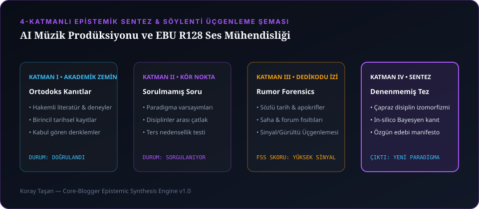

Yıllarca kurgu masasında başkalarının filmlerine ritim verirken içimde hep aynı ukde vardı: Müzik. Ama klasik anlamda eline gitarı alıp tek bir türe hapsolmak değil. Kendi kendime hep şunu sordum: Bir ses "doğru" olmak zorunda mı? Bir şarkı tek bir türe ait olmak zorunda mı? Bir insan kendini anlatmak için hep aynı kişi olarak mı kalmak zorunda?
Generatif ses ve yapay zekâ vokal modelleri hayatımıza girdiğinde herkes bunu "ücretsiz stok müzik üretme aracı" zannetti. Biz ise bambaşka bir deliliğin peşine düştük: Ya insan söz yazarlığı ve 15 yıllık ses prodüksiyon kulağı ile yapay zekânın sınır tanımayan tınılarını çarpıştırıp yaşayan bir müzik şirketi (CORE MUSIC) ve hibrit sanatçı kimlikleri doğurursak?

1. "Why Do You Need to Know What I Am Before Deciding How You Feel About Me?" (KOR Deneyi)
KOR projesine başlarken masaya şu fikri koydum: "Biraz sosyal bir deney, biraz farkındalık projesi, biraz eğlence... Bir AI şarkıcı yaratalım ama bu AI'ın yüzü ben olayım. Etimle kemiğimle ekranın önündeyim ama AI taklidi yapayım. Belki de bu hesapta gördüğümüz şeyleri ne KOR ne de Koray tek başına yayınlıyor; bazen sadece biri, bazen diğeri, tamamen dengesiz!" 😄
İşte o gece proje tatlı tatlı kafayı yemeye başladı ve ortaya şu manifesto cümlesi çıktı: "Why do you need to know what I am before deciding how you feel about me?" (Bana karşı ne hissettiğine karar vermeden önce neden ne olduğumu bilmek zorundasın?). İnsan olmaya çalışan bir AI değil; kendisini tanımlamak zorunda bırakılmayı reddeden bir ses evreni.
2. CORE MUSIC Plak Şirketi Mimarisi: 4 Alt Label, 4 Farklı Müzikal Evren
Tek bir sanatçı profiline sığamadığımız için CORE MUSIC çatısı altında her biri kendi estetik kurallarına sahip 4 bağımsız alt label (sub-label) kurduk:
| Alt Label (Sub-Label) | Müzikal Kimlik & Atmosfer | Öne Çıkan Eserler & Dinleme Köprüleri |
|---|---|---|
| CORE MUSIC LONDON | İngilizce Dark Synth-Pop, Nocturnal Drill & The Lunar Phase Series (Ay'ın 7 Evresi). | Kiss Me Wrong, Cold Asphalt, Pay The Price, Beautiful Damage, If One Remains, We Own The Morning |
| khrysaor | Derin Türkçe alternatif, melankolik şehir şiiri, elektronik ve sinematik vokal. | Bilmem Ben De, Biri Varmış Öteki Yok Olmasın, Bu Şarkıyı Kaybedemem, Low Battery, Asmalı |
| SUSSUZ SOUNDTRACKS | SUSSUZ bağımsız sinema evreninin orijinal karanlık film müzikleri (OST). | Bataklık, Hırsız |
| ANGARALI KEREMSİ | Sokak kültürü, ironi, protest enerji ve yerel ritimlerin hiper-modern sentezi. | Gospel Baby, Yoldan Çıkıyorum Baba |
3. Şarkı Sözlerinde Çift Katmanlı Anlam: "Görünen Yüzde Aşk, İçeride Başka Şeyler"
AI müzik araçlarında hazır söz ürettirdiğinizde size "neon ışıklar altında kırık kalpler" gibi plastik tekerlemeler verir. Oysa Şarkı Sözleri & Lirik Defteri arşivimizdeki her satır yaşanmışlıktan ve çift katmanlı mimariden doğdu. İlke şuydu: "Vitrinde tatlı bir ayrılık veya aşk şarkısı çalsın, ama bağlamı değiştirdiğinde içeride sistemin ve insan ruhunun ciğerini söken bambaşka bir anlam aksın."
Örneğin "You don't have to keep me / But just keep some of me" ya da Biri Varmış Öteki Yok Olmasın sözlerini ilk dinlediğinizde bitmiş bir ilişkinin ardından yaşananların silinmesini istemeyen bir aşık duyarsınız; ama çerçeveyi biraz kaydırdığınızda insan ile yapay zekânın birbirinin hafızasında bıraktığı o silinmez izi okursunuz.
4. Saha Hafızası: Kapaklarda "Buzlu Cam Lirik Kutusu" Krizi ve Çift URL Aynalama
Müzik üretim sürecimizi otonomlaştırırken yaşadığımız iki büyük krizi ve bunları nasıl kalıcı sistem kurallarına dönüştürdüğümüzü paylaşayım:
Sorun: Şarkılarımız için 1080p Glass Mirror Depth Blur (buzlu cam derinlik efektli) lirik videoları üretirken, görsel üretim scriptimiz aynı buzlu cam söz kutusunu ve "-14 LUFS Studio Master ITU-R BS.1770" teknik etiketini YouTube küçük resimlerine (thumbnail) ve Spotify albüm kapaklarına da basmaya kalktı! Kapak dediğin şey video arayüzü değildir; kapak nefes almalıdır!
Çözümümüz (khrysaor-cover-art-pro Standardı): Hemen katı bir görsel sanat yönetmenliği yasası tanımladık: 1) Sıfır Lirik Kutusu / Sıfır Karaoke Sekmesi, 2) Sıfır Teknik Jargon Yasağı, 3) 3 Katmanlı Lüks Tipografi (KHRYSAOR imzası + Eser Adı + Minimal Rozet) ve 4) Sağ Alt 180x48px YouTube Süre Rozeti Güvenlik Alanı. Ayrıca GitHub Pages üzerinde bazı dinleyicilerin /core_music/, bazılarının ise nokta ile /core.music/ yazdığını fark edince her iki dizini de tam senkronize ayna (mirror) olarak konuşlandırıp 404 riskini sıfırladık.
5. Uyku Atlası ve Semantik Foley: -14 LUFS ile -21 LUFS Arasındaki Nöro-Akustik Fark
Ses mühendisliğinde tek bir "doğru" ses yüksekliği yoktur; dinleyicinin biyolojik durumu vardır:
- Spotify / YouTube Müzik Mastering (
-14 LUFS Integrated,-1.0 dBTP True Peak): CORE MUSIC parçalarında kök (stem) ayrıştırma sonrası vokal, sub-bass ve transient dengesini EBU R128 standardında-14 LUFS'a kilitliyoruz ki platform algoritmaları parçayı ezmesin (limiting distortion). - Uyku Atlası Semantik Foley Mimarisi (
-21 LUFS Integrated): Uyku ve derin odaklanma anlatılarında ise "Duyulan her kelime bir akustik ize dönüşür" ilkesini uyguluyoruz. Anlatıcı "Sibirya taygasında rüzgâr" dediği milisaniyede, kelime bazlı zaman damgası (Whisper phonetic alignment) arka plandaki foley katmanının zarfını (envelope) yumuşakça açar; ancak entegre ses yüksekliği-21 LUFS'ta tutularak parasempatik sinir sisteminin uyanması engellenir.
"Görsel algı yönlendirilir ama kulak asla uyumaz. İyi bir miks, dinleyicinin hoparlörü unuttuğu ve şarkının odanın içindeki havadan geldiğine inandığı andır."